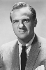

Also known as:Il gatto a nove code (original title)
Country:Italy, 112 minutes
Spoken languages:Italian
Genres:Horror, Mystery, Thriller
Director(s):Dario Argento
Writer(s):Dario Argento, Bryan Edgar Wallace
Video Codec:Unknown
Number: 869


Certification:
Storyline:
A reporter and a blind, retired journalist try to solve a series of murders. The crimes are connected to experiments by a pharmaceutical company in secret research. The two end up becoming targets of the killer.
Cast: 


Medium: Bluray,
Comments: Part of: The Dario Argento Collection
Loaned: No
Aspect ratio: Unknown